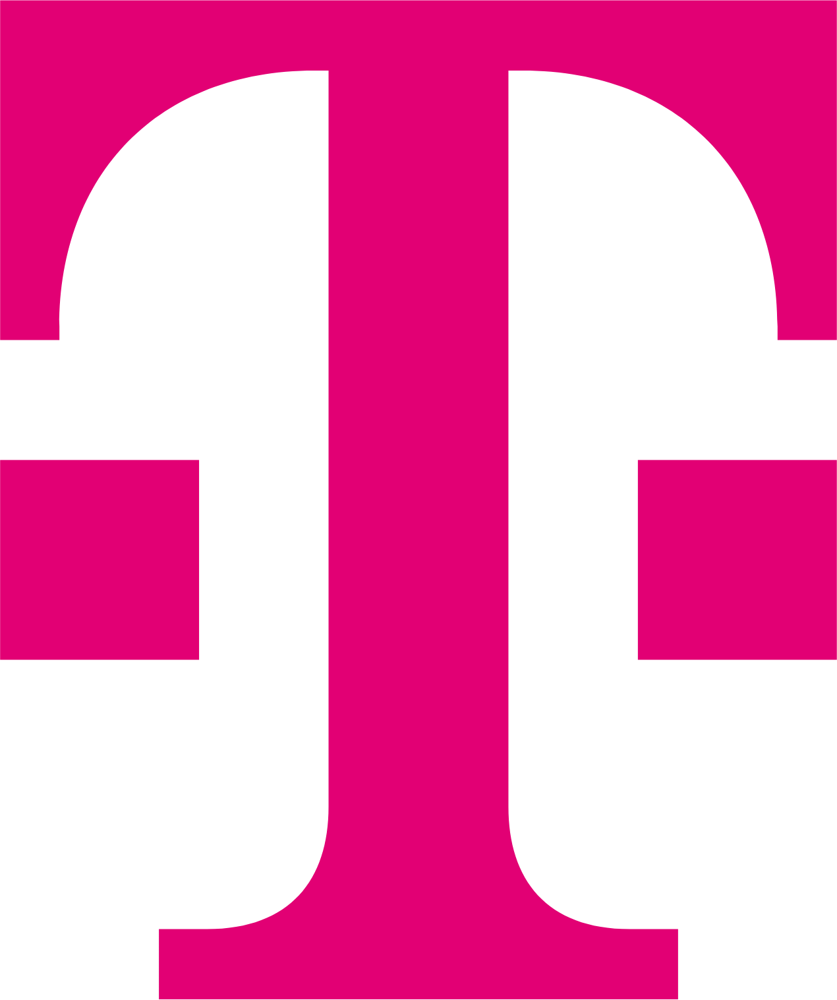

Michal Kováčik
AI Strategy, Vision, and Implementation Leader

michal.kovacik@icloud.com | michal.kovacik@telekom.com
www.linkedin.com/in/michalkovacik
gitlab.devops.telekom.de/michal.kovacik
Slovakia
I operate on the firm belief that the most effective technology leaders remain deeply connected to the craft of software development and the customer needs it serves. This philosophy guides my approach to leadership: I build and scale high-performing engineering teams that are empowered, innovative, and focused on delivering excellence. With over 15 years of experience, my current focus is on spearheading the strategic implementation of Artificial Intelligence, transforming not just how we create software, but what's possible for our products. My ultimate goal is to harmonize technology and talent to solve complex challenges, deliver outstanding customer value, and drive the organization toward its most ambitious strategic goals.